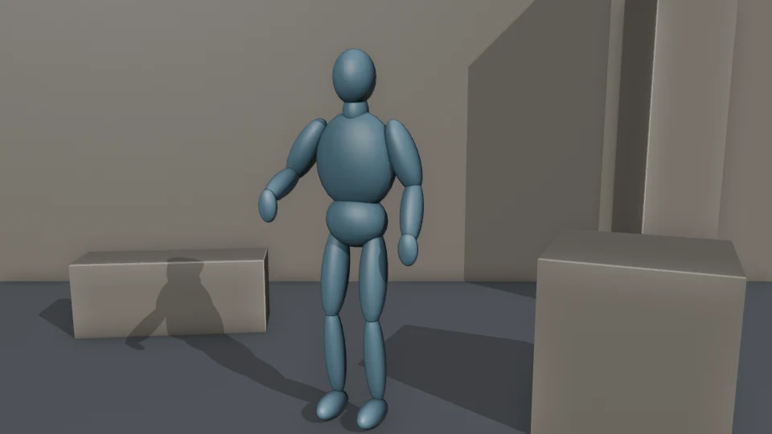

Blender 5.2 / Windows
ZURA Shot Reader
Turn a video reference into an editable Blender scene. Fit the camera, set and motion locally, compare them against the source and export a clean geometry sequence for AI rendering.

From reference to editable scene
Shot Reader runs Voyager Shot Reader 8B locally and translates its estimates into Blender objects.
- 01An editable camera and setMatch the source framing and use the local reconstruction tools to refine the lens, camera movement and visible set.
- 02Poseable charactersPose the included mannequin or fit motion using a configured local SAM 3D Body runtime. Key artist corrections on the fitted rig.
- 03Compare with the sourceToggle the original footage over the camera view and dial in the opacity as you scrub.
Build a blockout
Open Shot Reader in the Blender sidebar.
- Choose your reference
Select a video file. Shot Reader can make separate scenes at detected hard cuts.
- Create a blockout
Run the analysis on your GPU. The result opens in camera view with its shot sheet saved as JSON.
- Refine and export
Adjust the camera, set and poses against the source, then export clean PNGs of a frame or the whole shot.
Install in Blender
Tested on Windows with Blender 5.2 and an NVIDIA RTX 4080 with 16 GB of VRAM.
- Install the prerequisites
Install 64-bit Python 3.11 to 3.13 and FFmpeg. Put python, ffmpeg and ffprobe on PATH.
- Set up local inference
Download setup-runtime.ps1 and run it in PowerShell. It creates a local environment and downloads around 17.5 GB of weights. Allow at least 25 GB of free disk space.
- Add Shot Reader
In Blender Preferences, choose Add-ons, then Install from Disk. Select the ZIP and enable Shot Reader Local. Press N in the 3D View to find the Shot Reader tab.
Automatic reconstruction on Windows uses additional local checkpoints and a compatible SAM 3D Body installation. See the runtime instructions.
The Apple silicon blockout preview targets macOS 14 or later and Blender 5.2. End-to-end inference on Apple hardware still needs testing.